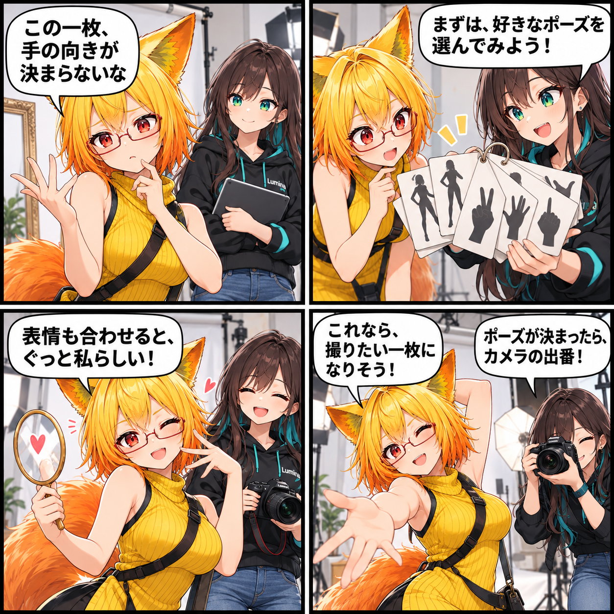

2026.10.15 / Development Log
一枚のために、ポーズを選ぶ日
VRASで使えるアバター調整と撮影支援を組み合わせて、撮りたい一枚へ寄せる流れを紹介します。
機能紹介です。集計期間は 2026-10-14 03:00:00 JST から 2026-10-15 02:59:59 JST。対象ブランチは main、集計終了時点のHEADは
e489bb2e2ced26e7c42dc7bc34e7664684774baf、対象コミットは0件です。未コミットの変更は時刻の裏付けがないため含めていません。この記事は、現在実装済みの機能を紹介するもので、当日の実装完了を示すものではありません。
そのアバターらしい姿をつくる
VRASではVRM / VABアバターを読み込んだあと、パーツ表示、BlendShape、Pose、Materialを調整できます。同じアバターでも、手の向きや立ち方、表情で印象は大きく変わります。衣装や表情を含めて、撮りたい雰囲気を一つずつ整えていくための入口です。
背景とカメラの前で確かめる
調整はそれだけで終わりではありません。VBG背景やStudio Stateを読み込めるので、用意した場面の中でアバターの見え方を確かめられます。DesktopとVRのどちらでも扱えるUI、そしてスクリーンショット・撮影支援を使いながら、決めたポーズを一枚の画として残す流れにつなげます。
4コマの裏話
撮影の前の「どの手にしよう」「どんな表情にしよう」は、完成の少し手前にある楽しい迷いです。今回は、ろひが物理的なポーズカードを選び、ルミナがカメラを構える小さな撮影会にしました。今日この機能を実装したという意味ではなく、現在のVRASで使える調整と撮影支援を題材にしています。
まとめ
VRASは、アバターのPose、BlendShape、パーツ表示、Materialを調整し、背景と撮影支援を組み合わせて「撮りたい一枚」をつくるためのローカルViewer / Studioです。
本日のひとこと
一枚の写真は、選んだポーズからはじまる。